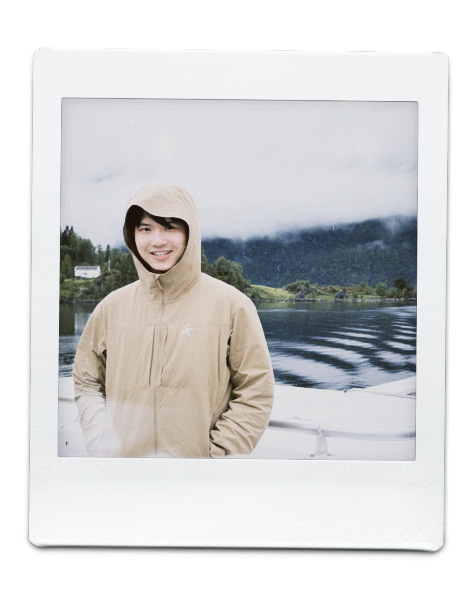

Astronomer · Leiden Observatory
Daming Yang 羊达明
I am a PhD candidate at Leiden Observatory, working with Joe Hennawi. I study quasars and galaxies in the first billion years of the Universe. My current work focuses on discovering quasars deep in the epoch of reionization with the Euclid space telescope and the largest ground-based telescopes (especially Keck), and understanding the supermassive black holes that power quasars of all kinds with JWST and ALMA. More recently, I have also begun studying the brightest galaxies of the reionization era.
Updates
Timeline News
-
Euclid discovers 31 high-redshift quasars
Our Euclid search confirmed 31 quasars at z = 6.6–7.8, including the two most distant quasars yet observed. Read the story or view the A&A paper.
-
JWST Cycle 5 Survey proposal
Our NIRSpec Survey program 11173 was selected for JWST Cycle 5 (co-PI).
-
ALMA Cycle 12 proposal
We were awarded 10 hours of ALMA Band 6 time in Cycle 12 (2025.1.01312.S; PI).
-
HST Cycle 33 proposal
Our WFC3 SNAP program 18112 was selected for HST Cycle 33 (co-PI).
-
JWST Cycle 4 proposal
We were awarded 94 hours of JWST/NIRSpec time in Cycle 4 through program 9180 (co-PI).
-
High-z Quasar Candidate Archive published
The paper from my master's project was published. We cleaned up observations of 176 candidates from a pre-Euclid quasar search campaign, finding three new z ~ 6 quasars. Read the paper.
-
Started my PhD at Leiden Observatory